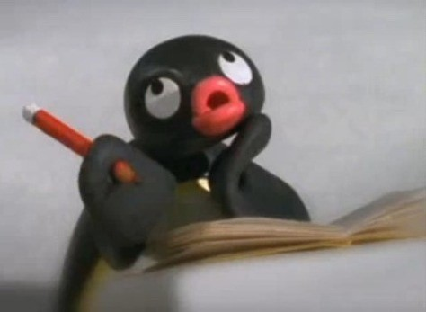

Who is Pingu
Florin popPingu is the main protagonist of the TV show of the same name and Pingu in the City. He was co-created by Otmar Gutmann and Erika Brueggemann in 1984. He has been voiced by Otmar Gutmann in the pilot episode, Carlo Bonomi, David Sant, and Ryota Iwasaki.
Pingu
Pingu is the main protagonist of the TV show of the same name and Pingu in the City. He was co-created by Otmar Gutmann and Erika Brueggemann in 1984. He has been voiced by Otmar Gutmann in the pilot episode, Carlo Bonomi, David Sant, and Ryota Iwasaki.